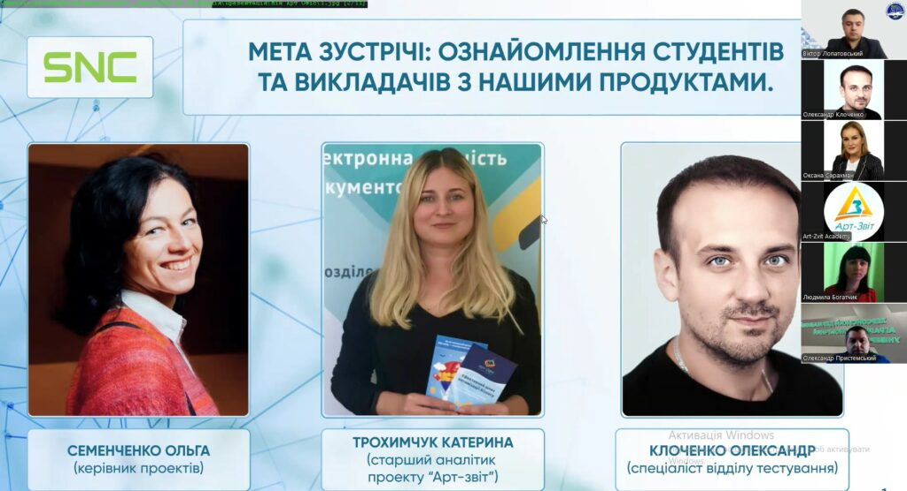

В рамках реалізації практико-орієнтованого підходу до організації освітнього процесу викладачів та здобувачів освіти спеціальності 071 “Облік і оподаткування” вітчизняних вищих навчальних закладів освіти 12 та 13 березня було проведено гостьові лекції на теми сервіс «Мій Арт-Офіс» та програмний продукт «Арт-Звіт Pro»
Гостьові лекції були проведені на базі Хмельницького національного університету за участю партнерських вишів: Державного податкового університету, Житомирського державного університету імені Івана Франка, ЗВО «Подільський державний університет», Калинівського технологічного фахового коледжу, Луцького національного технічного університету, Львівського національного університету імені Івана Франка, Миколаївського національного аграрного університету, НУ «Полтавська політехніка імені Юрія Кондратюка», Українського державного університету науки і технологій, Університету економіки і підприємництва, Херсонського державного аграрно-економічного університету, Херсонського національного технічного університету, Хмельницького кооперативного торгівельно-економічного інституту та Чорноморського національного університету імені Петра Могили. Участь у лекціях взяли майже 100 учасників, серед яких були викладачі та здобувачі вищої освіти економічного спрямування Хмельницького національного університету та представники партнерських закладів освіти.

12 березня 2025 року
В рамках запланованої гостьової лекції ТОВ «ЕСЕНСІ», провайдером хмарного сервісу електронного документообігу «Мій Арт-Офіс», всі зацікавлені слухачі мали змогу ознайомитись з особливостями роботи в даному сервісі. Спікером лекції був Олександр КЛОЧЕНКО – спеціаліст відділу тестування.
Виступ спікера був спрямований на детальне ознайомлення слухачів з можливостями сервісу. Олександр КЛОЧЕНКО презентував аналіз переваг використання «Мій Арт-Офіс» порівняно з іншими програмними продуктами на вітчизняному ринку облікового програмного забезпечення. Основними перевагами сервісу є високий рівень безпеки завдяки власному хостингу, два рівні перевірки електронних документів та можливість внесення міток при роботі з ними. Лекція дозволила слухачам повністю зрозуміти принципи роботи в хмарному сервісі, оцінити його переваги та перспективи для майбутнього застосування в навчальному процесі та професійній діяльності.
Посилання для ознайомлення з лекцією:
13 березня 2025 року
В рамках запланованої гостьової лекції ТОВ «ЕСЕНСІ», провайдером та дистриб’ютером облікового програмного забезпечення «АРТ-ЗВІТ Pro», всі зацікавлені слухачі мали змогу ознайомитись з особливостями роботи в програмному продукті «АРТ-ЗВІТ Pro». Спікером зустрічі була Катерина ТРОХИМЧУК – старший аналітик проекту «АРТ-ЗВІТ Pro»
Лекція з «АРТ-ЗВІТ Pro» була орієнтована на автоматизацію бізнес-процесів, зокрема в обліку первинного документообігу, створенні податкових накладних, роботі з РРО та формуванні звітності. Катерина ТРОХИМЧУК детально розкрила можливості програмного забезпечення, продемонструвавши його ефективність для автоматизації бухгалтерії, обробки фінансових даних та зменшення ризиків у управлінні. Лекція сприяла підвищенню рівня професійних компетенцій учасників та допомогла отримати корисну інформацію для майбутньої кар’єри.
Посилання для ознайомлення з лекцією:
Переглянути >>
Відгуки на лекції
Лекції отримали схвальні відгуки від слухачів, які розміщені на сайтах університетів.